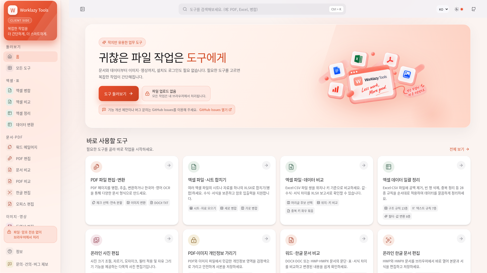
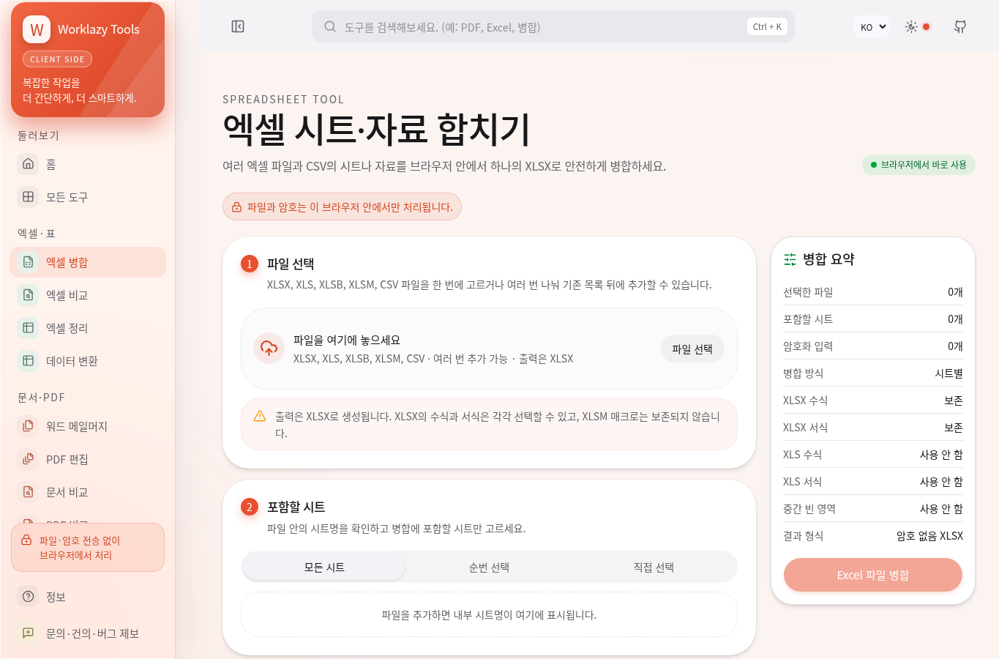
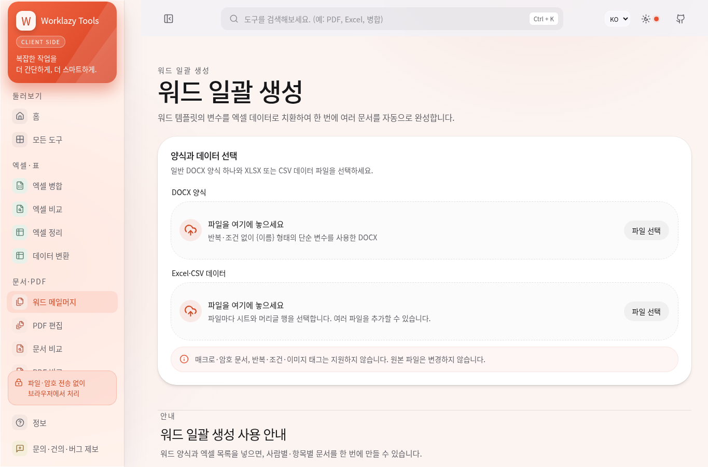

WORKLAZY TOOLS · WEB SERVICE
Worklazy Tools
설치 없이 쓰는 파일 도구
브라우저에서 문서를 비교하고, 엑셀을 합치고, 문서 양식을 채웁니다.
파일을 고른 뒤 결과를 내려받는 문서·엑셀·PDF 웹 도구입니다.
웹 전환의 성과
설치 부담을 줄이고, 링크로 바로 배포
용량이 큰 실행파일을 내려받아 설치하던 도구를 브라우저에서 바로 쓰도록 바꿨습니다. 사용자에게 전달하기 쉬워졌고, 파일을 고른 뒤 결과를 받는 과정도 간편해졌습니다.
필요한 파일 도구를 한곳에서 찾습니다.
도구를 선택하고 파일을 넣으면 브라우저에서 작업한 뒤 결과를 저장할 수 있습니다.

파일을 합치고 비교하며, 문서 양식을 채웁니다.
엑셀 병합
파일과 시트를 골라 원하는 조건으로 합칩니다.
↗02엑셀 비교
셀 위치, 기준 열, 거래 대사 조건을 정해 차이를 찾습니다.
↗03문서 비교
Word·한글 문서에서 달라진 문단, 표, 서식을 찾습니다.
↗04문서 일괄 생성
엑셀·CSV 데이터를 DOCX 양식에 채워 여러 문서를 만듭니다.
↗



PC에서 쓰던 비교·병합 도구를 웹으로 옮겼습니다.
Python 프로그램
Word Compare · ExcelMerger
Python·Qt와 PC에 설치된 Office를 사용합니다.
Worklazy Tools
TypeScript · Web Worker · WASM
브라우저에서 파일을 고르고 결과를 저장합니다.
개발 배경
Word Compare와 ExcelMerger는 업무에서 쓰기 위해 만든 설치형 프로그램이었습니다. 배포 파일의 용량이 크고 사용자가 내려받아 실행 환경을 준비해야 해서, 다른 사람에게 간편하게 전달할 수 있는 웹 도구로 다시 만들었습니다.
구현과 배포
파일 형식에 맞는 라이브러리를 쓰고, 파일 읽기와 계산은 Web Worker에서 실행합니다. 문서·엑셀 파일을 사용자의 브라우저 안에서 처리하고 결과를 내려받도록 구성했습니다.
화면과 실행 코드를 정적 웹페이지로 배포해 링크만 전달하면 이용할 수 있게 했습니다. 설치 과정을 줄이고 도구들을 한곳에 모아, 사용자가 필요한 작업을 바로 선택할 수 있도록 개선했습니다.
문서·엑셀 처리를 브라우저 안에서 실행합니다.
- 개발 언어
- TypeScript
- 화면 라이브러리
- React
- 파일 라이브러리
- ExcelJS · SheetJS · docxtemplater · PizZip · PDF.js · pdf-lib
- 실행 방식
- 파일을 브라우저에서 읽고 쓰며, 계산에는 Web Worker와 외부 WASM 엔진을 씁니다.
- 빌드·배포
- Vite · GitHub Actions · GitHub Pages
업무에서 만든 설치형 도구와 보고서 자동화
계약서 검토, 감사 자료 병합, 공직윤리 자료 변환과 보고서 작성에 적용한 사례를 따로 정리했습니다.